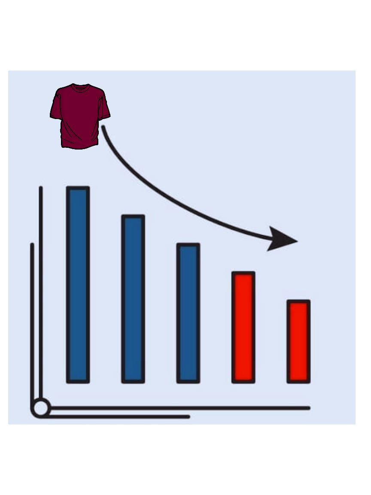

Kurangnya tanggapan responsif dari pihak penerbit kepada para penulis, khususnya penulis pemula.
Tidak transparan atau terbuka terhadap laporan penjualan buku yang telah menjadi hak royalti
penulis.
Kurangnya kerjasama dan komunikasi
Tidak adanya langkah perbaikan dari masalah serupa yang telah terjadi berulang-ulang.
Solusi sebagai HR
Mencari tahu alasan admin Kata Depan kurang responsif. Apabila karena overwork, maka harus membagi tugas
dengan
pekerja lain atau membuka recruitment admin. Namun, bila pekerja tersebut yang bermasalah, maka harus
diberi
sanksi berupa potongan gaji atau SP.
Memperbaiki laporan royalti atau buku besar tentang pemasukan penjualan, serta mengevaluasi bagian
keuangan.
Baru kemudian memberi konfirmasi dan kompensasi yang sesuai kepada penulis.
Bertanya secara pribadi untuk mencari tahu apa yang menjadi penyebab masalah dan mendiskusikan jalan
keluar
bersama.
Memberi sanksi tegas pada para pekerja yang tidak bertanggung jawab lalu memproses gaji para penulis.
Untuk
memperbaiki citra buruk penerbit, lebih disarankan untuk memberi konfirmasi resmi di akun media sosial.
Masalah yang Sedang Dihadapi Perusahaan PT Pan Brothers
Mereka sedang mengalami penurunan permintaan produk mereka di pasar global
Persaingan dengan perusahaan lain
Perubahan tren mode yang terus berubah
Biaya produksi yang tinggi, dan kualitas produk yang kurang memuaskan

Solusi yang Sudah Mereka Terapkan
Memfokuskan pada peningkatan kualitas produk dan efisiensi biaya produksi
Mereka juga sedang mencari peluang bisnis diluar dari sektor pakaian
Solusi dari Sudut Pandang HR yang Seharusnya Perusahaan Tersebut Lakukan
PT pan brothers dapat mengembangkan strategi pemasaran yang lebih agresif serta inovatif, untuk
meningkatkan awareness dan daya tarik produk mereka di pasar global
Mereka dapat melakukan riset pasar untuk mengetahui tren mode terbaru apa saja yang dapat mereka
"adopsi" dalam produk mereka
Selain itu PT pan brothers dapat melakukan diversifikasi produk dengan mengembangkan produk-produk baru
yang sesuai dengan kebutuhan pasar dan produk-produk yang lebih diminati oleh anak muda dan orang tua di
jaman sekarang
Kita perlu melakukan peningkatan keterampilan pekerja/ meng hire tenaga baru yang berkompeten dibidang
inovasi marketing produk